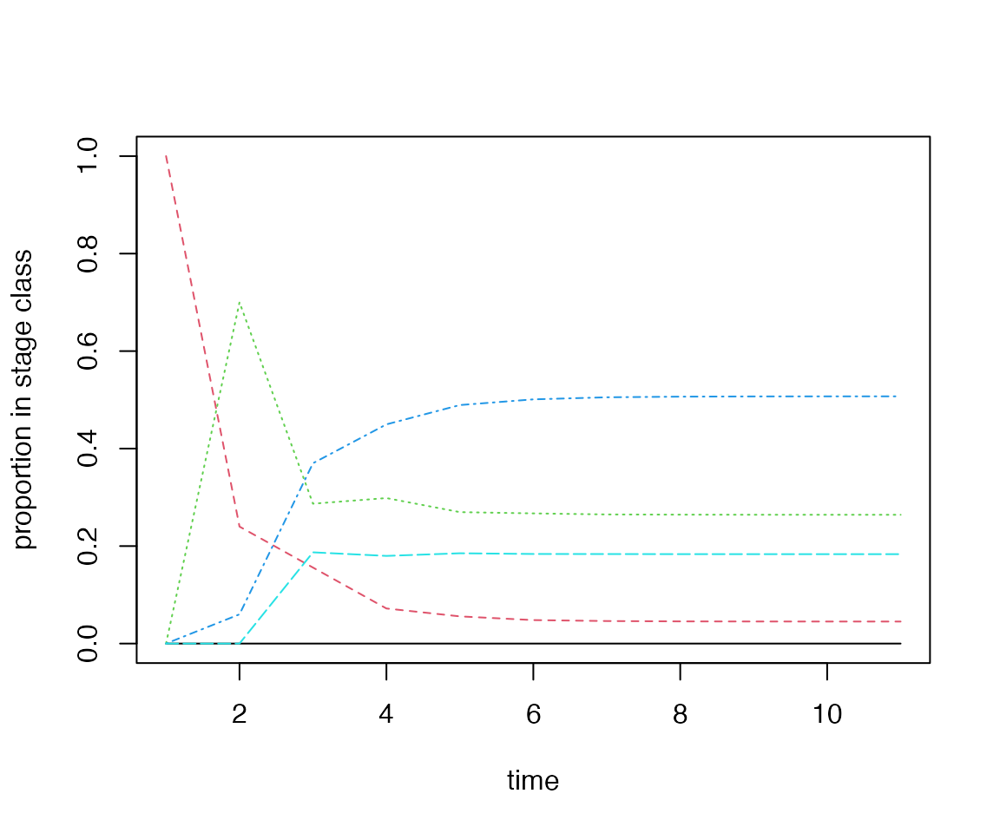
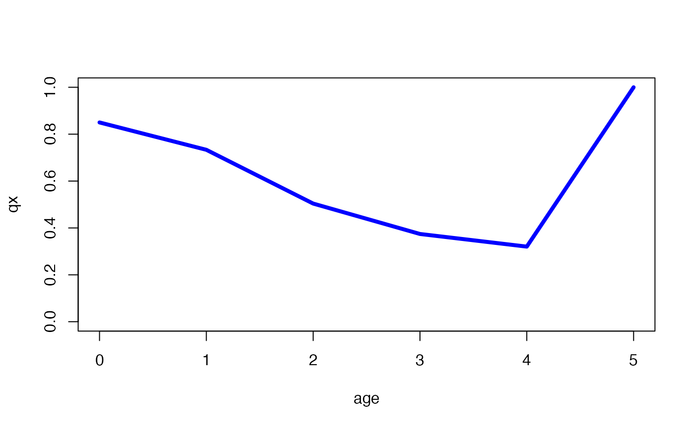

vignettes/a01_GettingStarted.Rmd
a01_GettingStarted.RmdRage provides tools for manipulating and analysing
matrix population models (MPMs). This vignette introduces the structure
of the input and highlights key analysis functions across the
package.
The functions in Rage assume that the reader is familiar
with the basic structure of MPMs and how they are used to project
population change and basic demographic statistics (e.g., the
equilibrium population growth rate, \(\lambda\)). This section is intended as a
recap of these concepts–readers ready to begin calculating more advanced
life history metrics may want to skip ahead to the
next section. We refer readers to Caswell
(2001) for a comprehensive introduction to MPMs.
Matrix population models are a mathematical tool that integrate population dynamics and population structure to model the dynamics of populations with different ‘types’ of individuals, whether due to age, life stage, sex, genotype or any other attribute that causes differences in demographic rates. Consider a plant species with three different types of individuals: seedlings that have newly recruited into the population from seeds, non-reproductive rosettes, and flowering adults that make seeds and also reproduce asexually by vegetative budding. We can represent the biology of this life cycle graphically (Fig. 1) where each life stage is a node and the life stages are connected with arrows showing the paths (and probabilities) that individuals move between stages.
Figure 1. Life cycle diagram for a hypothetical plant with three life stages (nodes). Arrows are coloured by conventional groupings of demographic processes: growth and survival (green), sexual reproduction via seeds (gold) and asexual reproduction via budding (purple). The numbers along each arrow indicate the transition probability–how many individuals will there be in the stage at the arrow’s end at the next time step for each individual at the arrow’s start?
The transition or projection matrix (Fig. 2; called A in matrix notation) for this life cycle is a square matrix where the rows and columns correspond to the life stages (nodes) and the elements correspond to transition probabilities (arrows). By convention, the columns reflect the current life stage (i.e., the arrow’s start) and the rows reflect the arrow’s end.
Figure 2. Transition (projection) matrix corresponding to the life cycle in Fig. 1.
For basic MPM projection and equilibrium analyses, this single matrix
is all that is needed. However, more advanced analyses like many of
those in Rage use decompositions of the A
matrix into its components of growth and survival (U)
and reproduction (R). Reproduction can be further
decomposed into offspring produced sexually (F) and
asexually/clonally (C; Fig. 3). The submatrices combine
additively to create the transition matrix,
\[ \begin{aligned} \mathbf{A} &= \mathbf{U} + \mathbf{R} \\ &= \mathbf{U} + \left(\mathbf{F} + \mathbf{C}\right). \end{aligned} \] In our example, all of the elements of A are found in only one of the submatrices. However, other life cycles may have multiple pathways from one life stage to another.
Figure 3. Decomposition of the transition matrix, A, into U, F and C submatrices. The coloured elements correspond to the coloured arrows in Fig. 1.
Simple matrix multiplication allows the full transition matrix, A, to be projected forward in time for any starting population. We initiate the model with a population vector, \(\mathbf{n}_{t=0}\), that contains the number of individuals in each life stage. Right multiplying the initial population vector to the transition matrix, A, yields the population vector at the next time step via the projection equation,
\[ \mathbf{n}_{t+1} = \mathbf{A}\mathbf{n}_{t}. \] Suppose we initialize the example plant population, \(\mathbf{n}_{t=0}\), with five seedlings, 10 rosettes, and 15 flowering individuals. We expect that the population in the next time step will be,
\[ \begin{aligned} \mathbf{n}_{t=1} &= \mathbf{A}\mathbf{n}_{t=0}, \\ \left[ \begin{matrix} 48.0 \\ 17.5 \\ 17.5 \end{matrix} \right] &= \left[ \begin{matrix} 0 & 0 & 3.2 \\ 0.5 & 0.3 & 0.8 \\ 0 & 0.4 & 0.9 \end{matrix} \right] \left[ \begin{matrix} 5 \\ 10 \\ 15 \end{matrix} \right]. \end{aligned} \] Summing the population vectors gives us the total population size (\(N_{t=0} =\sum\mathbf{n}_{t=0} = 30\) and \(N_{t=1} = 83\)). Likewise, we can measure the instantaneous per-capita population growth rate as \(N_{t+1}/N_{t} = 83/30 = 2.7\overline{6}\)). Recursively substituting the new \(\mathbf{n}_{t+1}\) into the projection equation in place of \(\mathbf{n}_{t}\) allows us to continue projecting the population dynamics and life stage composition forward in time.
Provided that the transition matrix, A, meets
certain conditions, iterative projections from any starting population
vector \(\mathbf{n}_{t=0}\) will
eventually converge to an equilibrium per-capita population growth rate
(\(\lambda\)) and stable stage
distribution (\(\mathbf{w}\)). We can
determine \(\lambda\) and \(\mathbf{w}\) by finding the dominant
eigenvalue and its associated (right) eigenvector, respectively. The
popdemo package provide functions to do these calculations
(the package popbio also provides extensive functionality
for matrix model analysis):
library(popdemo)
# define the transition matrix, A
A <- rbind(
c(0.0, 0.0, 3.2),
c(0.5, 0.3, 0.8),
c(0.0, 0.4, 0.9)
)
# lambda: equilibrium per-capita population growth rate
popdemo::eigs(A = A, what = "lambda")
#> [1] 1.51273
# w: stable stage distribution (relative frequencies)
popdemo::eigs(A = A, what = "ss")
#> [1] 0.4551941 0.3296228 0.2151831From \(\lambda\), we infer that the population would eventually grow at an equilibrium rate of 51% per time step. Likewise, from \(\mathbf{w}\) we infer that nearly half of individuals will be seedlings, about a third will be rosettes and a fifth will be flowering at equilibrium.
Finally, we are reminded that MPM projections rely on
consistency of the demographic vital rates (i.e., transition matrix
elements) over time. Projections tell us what would happen if this
strong assumption were to be met. Projections differ radically from
forecasts, which are designed to predict what will happen.
Forecasting models may use MPMs to drive population change, but will
also typically require a component that predicts changes in the
underlying demographic vital rates. Keyfitz
(1972) unpacks these differences further, with special emphasis on
the value of projection as a window into the fundamental processes that
drive the behaviour of populations. Much of the functionality of
Rage rests on this ethos.
Rage
We’ll begin by loading one of the example MPMs included in the
Rage package, mpm1, which can be retrieved
using the base ‘data’ function.
library(Rage) # load Rage
data(mpm1) # load data object 'mpm1'
mpm1 # display the contents
#> $matU
#> seed small medium large dormant
#> seed 0.10 0.00 0.00 0.00 0.00
#> small 0.05 0.12 0.10 0.00 0.00
#> medium 0.00 0.35 0.12 0.23 0.12
#> large 0.00 0.03 0.28 0.52 0.10
#> dormant 0.00 0.00 0.16 0.11 0.17
#>
#> $matF
#> seed small medium large dormant
#> seed 0 0 17.9 45.6 0
#> small 0 0 0.0 0.0 0
#> medium 0 0 0.0 0.0 0
#> large 0 0 0.0 0.0 0
#> dormant 0 0 0.0 0.0 0mpm1 is a list containing the decomposition of an MPM
projection matrix into its components of growth and survival
(U) and reproduction (R =
F + C). Many Rage
functions accept one or more of these components in analyses. The
biological meaning of each list element is indicated by its name:
matU is the U matrix, which is the
growth/survival component of an MPM, containing
transitions related to progression, stasis and retrogression. This is
how individuals move among ages or life stages.matR is the R matrix, which is the
reproductive component of an MPM, containing
transitions due to reproduction; either sexual, clonal, or both.matF is the F matrix, which is the
sexual reproduction or fecundity component of the MPM,
containing transitions due to sexual reproduction.matC is the C matrix, which is the
clonal component of an MPM, containing transitions due
to clonal reproduction.When the mode of reproduction is known (e.g., a species only
reproduces sexually or the sexual and clonal offspring have been counted
separately), matR can be substituted with matF
or matC.
For any life history, we can reconstruct the full projection matrix,
A, by adding together the components. For
mpm1, A = U +
F. A population with separately counted sexual and
clonal offspring production would be A =
U + F + C.
Rage functions currently accept MPM components as
arguments; therefore, it is not necessary to group the matrix components
together in a list. We anticipate that future package releases will
define methods that accept objects of classes matrix,
CompadreMat, and CompadreDB for compatibility
with the COM(P)ADRE databases and
its accessor package Rcompadre.
Rage functions for life history
analysis
The functions in Rage fall into five broad categories,
and are detailed in the subsections below:
| Function category | Stand-alone vignette |
|---|---|
| 1. Vital rates | VitalRates |
| 2. Life tables | AgeFromStage |
| 3. Perturbation analysis | TernaryPlots |
| 4. Deriving life history traits | LifeHistoryTraits |
| 5. Transformation of matrices | n/a |
A full list of functions by category is available at the documentation webpage.
The elements of an MPM transition matrix (A) generally are composites of two or more vital rates (sometimes called ‘lower-level vital rates’). For example, the transition from stage 1 to stage 2 (element \(a_{21}\)) may colloquially be thought of as ‘growth,’ but importantly this transition is growth conditional on the individual surviving. Assuming a post-breeding census design, we can retroactively partition each transition in MPM submatrices into survival (using the column sums of U) and one of the following: growth (using the lower triangle of U), shrinkage (upper triangle of U), stasis (diagonal of U), dormancy (from U with user-indicated dormant stages), fecundity (from F) or clonality (from C).
The vr_vec_* family of functions provide a means to
calculate lower-level vital rates for each life stage in the input
matrix or matrices. For example, we can calculate stage-specific
survival and stasis from our example U matrix:
vr_vec_survival(matU = mpm1$matU)
#> seed small medium large dormant
#> 0.15 0.50 0.66 0.86 0.39
vr_vec_stasis(matU = mpm1$matU)
#> seed small medium large dormant
#> 0.6666667 0.2400000 0.1818182 0.6046512 0.4358974Multiplying these two together yields the probability of stasis conditional on survival, in other words the diagonal of our example U matrix.
# product of Pr(survival) and Pr(stasis) yields Pr(stasis|survived)
vr_vec_survival(matU = mpm1$matU) * vr_vec_stasis(matU = mpm1$matU)
#> seed small medium large dormant
#> 0.10 0.12 0.12 0.52 0.17
diag(mpm1$matU) # equivalent to the diagonal of U matrix
#> seed small medium large dormant
#> 0.10 0.12 0.12 0.52 0.17Rage also provides functions to summarize these vital
rates across stage classes using the vr_* family
of functions. These functions return a single value that is the mean of
the corresponding stage-specific vital rate vector from
vr_vec_*. Life stages may be excluded, allowing the user to
tailor these calculations to the life history of the organism and their
working definition of each vital rate. Similarly, custom weights are
allowed to control the contributions of life stages to the average. This
functionality is more fully described in the Vital
Rates vignette.
vr_survival(matU = mpm1$matU, exclude_col = 1) # exclude 'seed' stage
#> [1] 0.6025
mean(vr_vec_survival(mpm1$matU)[-1]) # equivalent to the mean without 'seed'
#> [1] 0.6025Classical demographic analyses were based on age-structured
populations, in which surviving individuals always progress to the next
age class. However, MPMs allow for demographic rates to be structured by
any number of biological criteria, whether stage, sex, size, or
condition. In these alternatively-structured models, individuals may
remain in the same state or even ‘regress’ to states they had
previously. Here there is no one-to-one mapping between state and age.
Each individual still has an age, and understanding their age-specific
demographic trajectories nevertheless offers a useful window into their
life history. Rage provides functions that decompose MPMs
into life tables, thereby allowing for a wide array of demographic
analyses based on age-specific trajectories (described below in section 4).
Following the age-from-stage methods of Caswell (2001, ch. 5.3), we can convert an MPM to a full, age-structured life table or any of its component columns.
lt <- mpm_to_table(matU = mpm1$matU, matF = mpm1$matF) # full life table
lt
#> x lx dx hx qx px ex mx
#> 1 0 1.00000000 0.85000000 1.4782609 0.8500000 0.1500000 0.7306918 0.00000
#> 2 1 0.15000000 0.11000000 1.1578947 0.7333333 0.2666667 1.0379453 0.00000
#> 3 2 0.04000000 0.02016000 0.6737968 0.5040000 0.4960000 1.5172950 9.54125
#> 4 3 0.01984000 0.00742535 0.4604204 0.3742616 0.6257384 1.5509980 19.49277
#> 5 4 0.01241465 0.00397750 0.3815018 0.3203876 0.6796124 1.1796124 24.83256
#> 6 5 0.00843715 0.00843715 2.0000000 1.0000000 0.0000000 0.5000000 26.79977
#> lxmx
#> 1 0.0000000
#> 2 0.0000000
#> 3 0.3816500
#> 4 0.3867365
#> 5 0.3082875
#> 6 0.2261137
lx <- mpm_to_lx(matU = mpm1$matU) # survivorship to start of each age class
lx
#> [1] 1.00000000 0.15000000 0.04000000 0.01984000 0.01241465 0.00843715Rage also supports translation between the different
ways of expressing age-specific mortality/survival, whether proportional
survivorship (lx), survival probability (px)
or mortality hazard (hx), following an x_to_y
function name pattern.
lx_to_px(lx = lx) # survivorship to survival probability
#> [1] 0.1500000 0.2666667 0.4960000 0.6257384 0.6796124 NA
lx_to_hx(lx = lx) # survivorship to mortality hazard
#> [1] 1.8971200 1.3217558 0.7011794 0.4688229 0.3862326 NAWhen individuals can remain in the last life stage class,
age-specific trajectories of mortality and fertility can appear to
plateau as a cohort asymptotically approaches its stable stage
distribution (SSD). For these MPMs, we can choose a quasi-stationary
distribution (QSD) of stages that is within an arbitrarily close
threshold of the SSD. Subsetting age-specific demographic trajectories
to time points before a cohort reaches the QSD will minimise these
plateau artefacts. In the example MPM, mpm1, a cohort of
germinated individuals quickly converges towards the SSD:
# project a germinated cohort through the U matrix
cohort <- popdemo::project(A = mpm1$matU, vector = c(0, 1, 0, 0, 0), time = 10)
popStructure <- vec(cohort) / rowSums(vec(cohort))
matplot(popStructure,
type = "l", xlab = "time",
ylab = "proportion in stage class"
)
Using qsd_converge, we can find the time at which the
cohort reaches the QSD and subset the life table or any component
age-specific trajectory accordingly.
# calculate time to QSD from the U matrix of an MPM
(q <- qsd_converge(mat = mpm1$matU, start = "small"))
#> [1] 6
# subset the life table rows to ages prior to the QSD
lt_preQSD <- lt[1:q, ]
# plot mortality trajectory from the life table subset (blue),
# showing plateau effect if the trajectory (grey) was allowed to continue to the
# QSD (dashed vertical line) and beyond
plot(qx ~ x,
data = lt, type = "l", col = "darkgrey", ylim = c(0, 1),
xlab = "age"
)
lines(qx ~ x, data = lt_preQSD, type = "l", col = "blue", lwd = 4)
abline(v = q, lty = "dashed")
We refer readers to the AgeFromStage vignette for further detail on these methods.
Perturbation analyses of MPMs measure the response of demographic
statistics, such as the equilibrium per-capita population growth rate
(\(\lambda\)), to perturbations
typically applied at the level of individual matrix elements and which
may be perturbations of a fixed or proportionate amount
(sensitivities and elasticities,
respectively). By extension, the vital rates (survival, growth, etc.) or
transition type (stasis, retrogression, etc.) underlying multiple matrix
elements may be similarly perturbed. Rage provides
functions for each scope of perturbation, allowing the user to specify
the desired demographic statistic and type of perturbation.
# construct the transition matrix A = U + F (+ C when present)
mpm1$matA <- with(mpm1, matU + matF)
# sensitivity of lambda to...
# ...matrix element perturbations
perturb_matrix(
matA = mpm1$matA,
type = "sensitivity", demog_stat = "lambda"
)
#> seed small medium large dormant
#> seed 0.2173031 0.01133203 0.004786308 0.002986833 0.001150703
#> small 4.4374613 0.23140857 0.097739870 0.060993320 0.023498191
#> medium 10.8654599 0.56661979 0.239323184 0.149346516 0.057537001
#> large 21.3053309 1.11104269 0.469270739 0.292842885 0.112820081
#> dormant 3.6111989 0.18831947 0.079540419 0.049636195 0.019122779
# ...vital rate perturbations
perturb_vr(
matU = mpm1$matU, matF = mpm1$matF,
type = "sensitivity", demog_stat = "lambda"
)
#> $survival
#> [1] 2.986054
#>
#> $growth
#> [1] 1.077597
#>
#> $shrinkage
#> [1] -0.1653284
#>
#> $fecundity
#> [1] 0.00572764
#>
#> $clonality
#> [1] 0
# ...transition type perturbations
perturb_trans(
matU = mpm1$matU, matF = mpm1$matF,
type = "sensitivity", demog_stat = "lambda"
)
#> $stasis
#> [1] 1.000001
#>
#> $retro
#> [1] 0.4174435
#>
#> $progr
#> [1] 6.713571
#>
#> $fecundity
#> [1] 0.007773141
#>
#> $clonality
#> [1] NAWhat is the life expectancy of an individual? At what age will it begin to reproduce? How likely is it to survive to reproduction? What is the generation time? These high-level questions address the population-level life history traits that emerge from aggregating individual-level demographic rates, and tracing trajectories through the life cycle.
Rage provides functions to calculate a wide range of
life history traits from both MPMs and life tables. We illustrate the
general pattern of these functions below, referring the reader to the LifeHistoryTraits
vignette and the documentation
webpage for a complete list of functionality.
MPM-based analyses take the required submatrix (or submatrices), optionally allowing the user to specify the life stage at which to start the calculation, choose among alternative methods and set cut-off thresholds.
# post-germination time steps until post-germination survivorship falls below 5%
longevity(matU = mpm1$matU, start = "small", lx_crit = 0.05)
#> [1] 7
# expected lifetime production of 'small' offspring by a 'small' individual
net_repro_rate(
matU = mpm1$matU, matR = mpm1$matF, start = "seed",
method = "start"
)
#> [1] 1.852091When calculating life table-based traits, MPMs can be transformed to the necessary age-based trajectory prior to analysis.
Rage includes a variety of functions that can be used to
manipulate or transform MPMs. For example, we can collapse an MPM to a
smaller number of stage classes using mpm_collapse().
# collapse 'small', 'medium', and 'large' stages into single stage class
col1 <- mpm_collapse(
matU = mpm1$matU, matF = mpm1$matF,
collapse = list(1, 2:4, 5)
)
col1$matA
#> [,1] [,2] [,3]
#> [1,] 0.10 11.61331815 0.00
#> [2,] 0.05 0.53908409 0.22
#> [3,] 0.00 0.05728085 0.17Notice that the stage names are lost during this operation. We can
re-add new stage names using the function name_stages,
electing to use generic or custom names.
# automated stage naming
(col1_auto <- name_stages(mat = col1, prefix = "class_"))
#> $matA
#> class_1 class_2 class_3
#> class_1 0.10 11.61331815 0.00
#> class_2 0.05 0.53908409 0.22
#> class_3 0.00 0.05728085 0.17
#>
#> $matU
#> class_1 class_2 class_3
#> class_1 0.10 0.00000000 0.00
#> class_2 0.05 0.53908409 0.22
#> class_3 0.00 0.05728085 0.17
#>
#> $matF
#> class_1 class_2 class_3
#> class_1 0 11.61332 0
#> class_2 0 0.00000 0
#> class_3 0 0.00000 0
#>
#> $matC
#> class_1 class_2 class_3
#> class_1 0 0 0
#> class_2 0 0 0
#> class_3 0 0 0
# overwrite with custom stages
(col1_cust <- name_stages(
mat = col1, names = c("seed", "active", "dormant"),
prefix = NULL
))
#> $matA
#> seed active dormant
#> seed 0.10 11.61331815 0.00
#> active 0.05 0.53908409 0.22
#> dormant 0.00 0.05728085 0.17
#>
#> $matU
#> seed active dormant
#> seed 0.10 0.00000000 0.00
#> active 0.05 0.53908409 0.22
#> dormant 0.00 0.05728085 0.17
#>
#> $matF
#> seed active dormant
#> seed 0 11.61332 0
#> active 0 0.00000 0
#> dormant 0 0.00000 0
#>
#> $matC
#> seed active dormant
#> seed 0 0 0
#> active 0 0 0
#> dormant 0 0 0The transition rates in the collapsed matrix are a weighted average of the transition rates from the relevant stages of the original matrix, weighted by the stable distribution at equilibrium. This process guarantees that the collapsed MPM will retain the same population growth rate as the original. However, other demographic and life history characteristics will not necessarily be preserved.
# compare population growth rate of original and collapsed MPM (preserved)
popdemo::eigs(A = mpm1$matA, what = "lambda")
#> [1] 1.121037
popdemo::eigs(A = col1_cust$matA, what = "lambda")
#> [1] 1.121037
# compare net reproductive rate of original and collapsed MPM (not preserved)
net_repro_rate(matU = mpm1$matU, matR = mpm1$matF)
#> [1] 1.852091
net_repro_rate(matU = col1_cust$matU, matR = col1_cust$matF)
#> [1] 1.447468